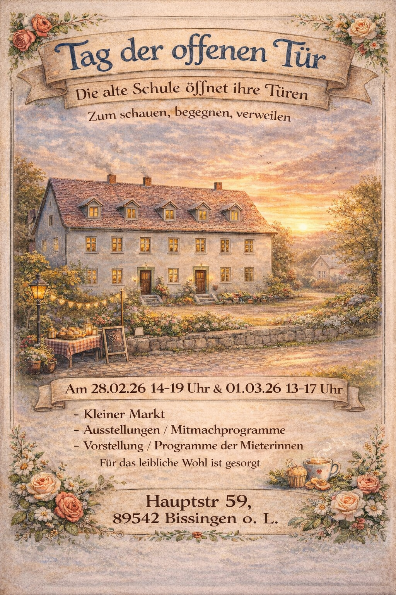
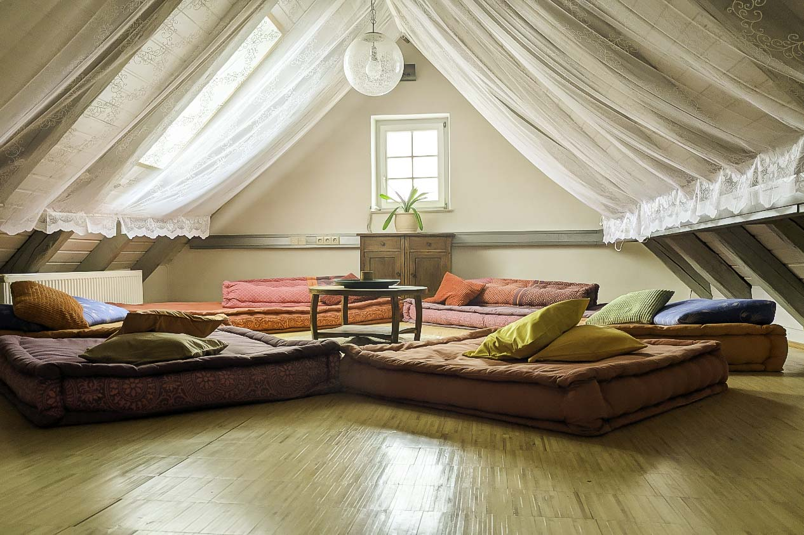
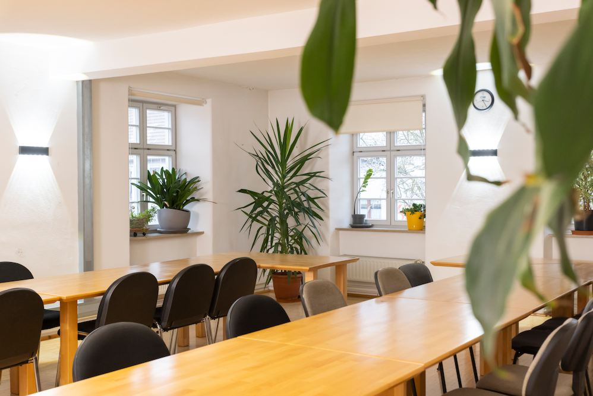
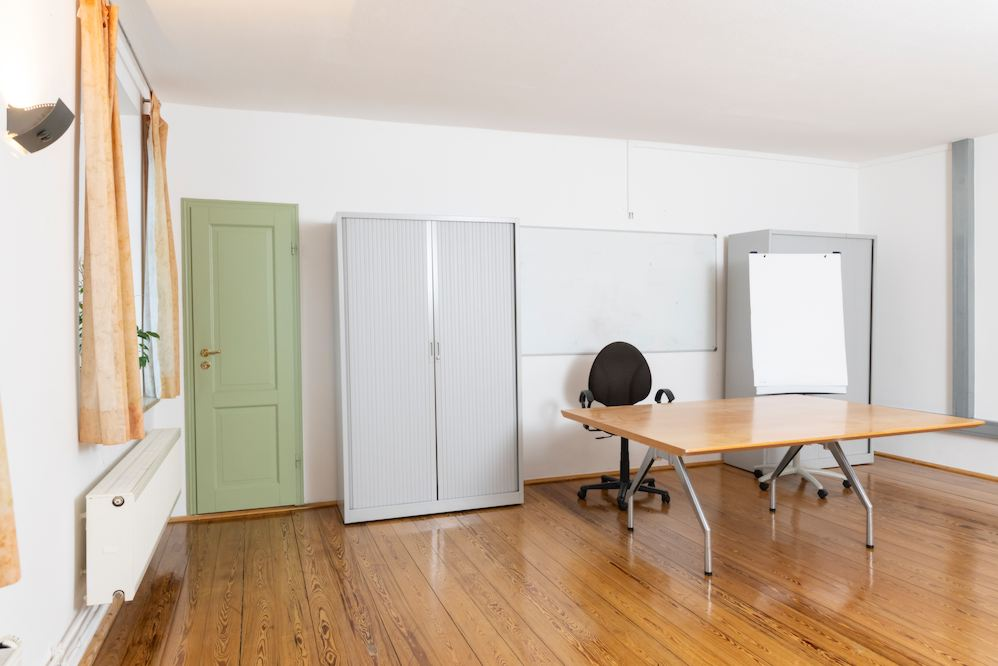
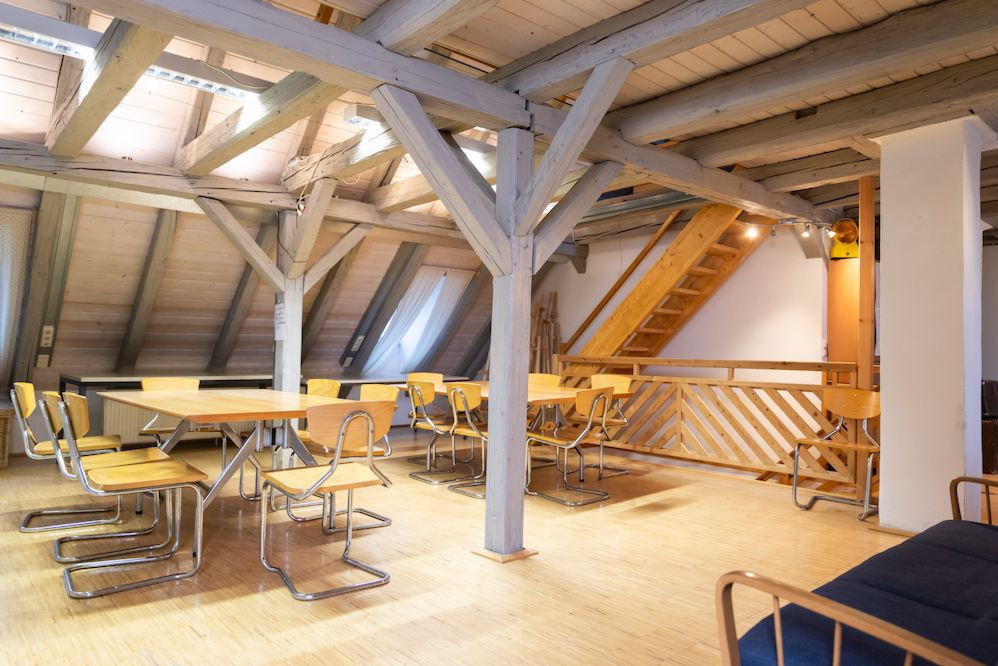
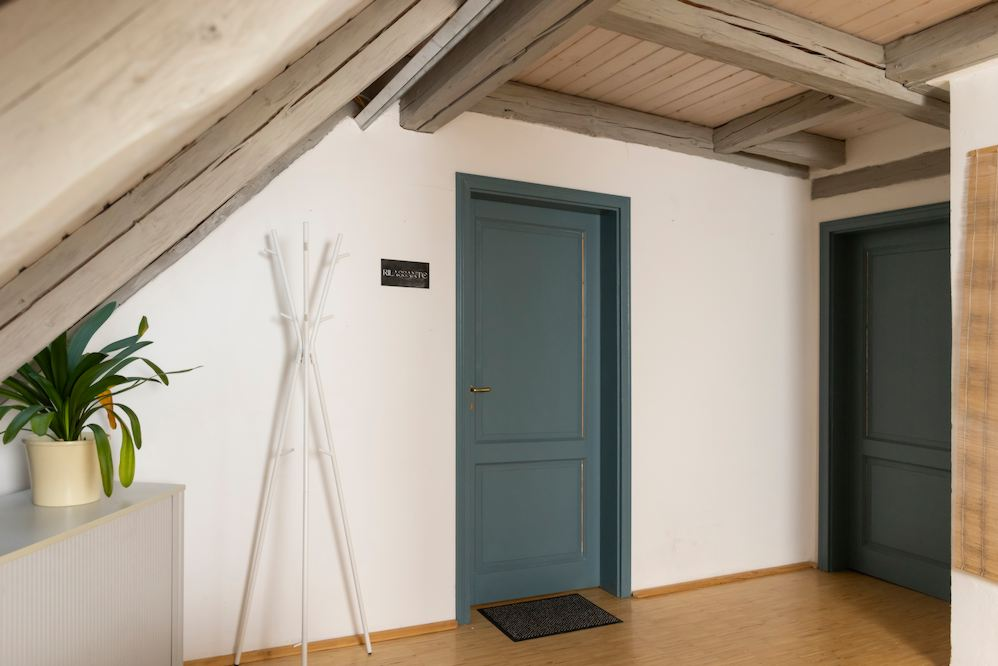

Am 28.02.2026 und 01.03.2026 öffnen wir die Türen der Alten Schule Bissingen und laden euch herzlich ein, das gesamte Haus zu entdecken! Schlendert durch alle Räume, lasst euch inspirieren und erlebt, was in diesem besonderen Ort steckt.
In jedem Raum gibt es etwas zu sehen, zu hören oder selbst auszuprobieren. Gemeinsam mit unseren Mieter:innen und weiteren kreativen Menschen aus der Region gestalten wir ein vielfältiges Programm voller kleiner Überraschungen und großer Ideen.
Ihr möchtet nicht nur zu Besuch kommen, sondern selbst mitwirken? Dann meldet euch gerne bis zum 22.02.2026 bei uns: alte.schule.bissingen@gmail.com
Wir freuen uns auf euch!
Hier finden Kreativschaffende flexible Arbeitsräume zur monatlichen Miete – ideal für Kunsthandwerk, ganzheitliche Körperarbeit oder konzentriertes Arbeiten im eigenen Workspace. Zusätzlich steht ein großzügiger Veranstaltungsraum zur Verfügung, der stunden- oder tageweise gebucht werden kann – perfekt für Workshops, Events oder die nächste Familienfeier.




